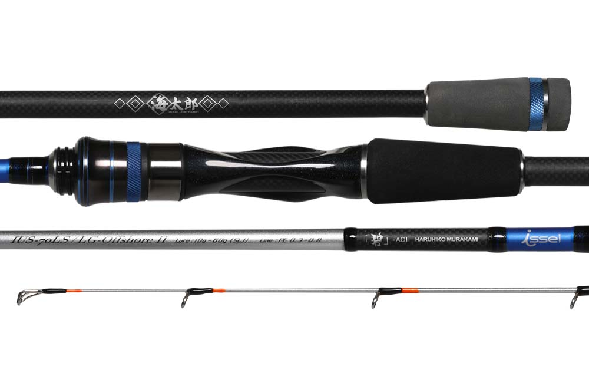
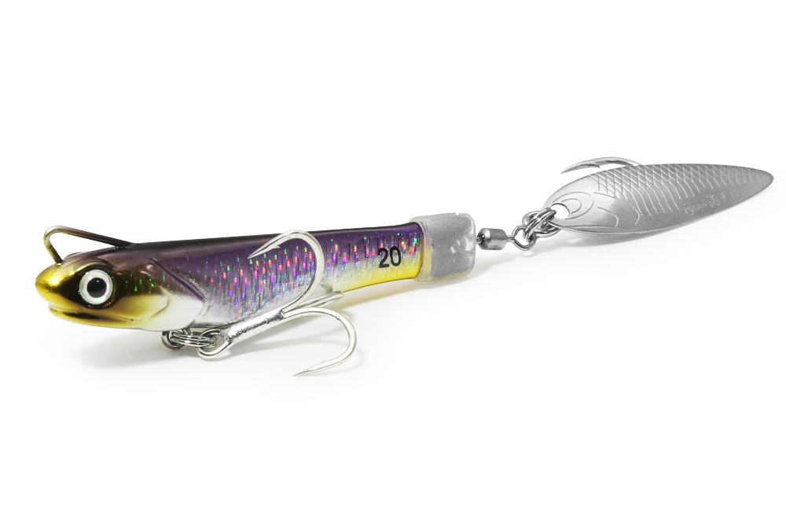

海太郎 碧（アオイ）IUS-70LS/LG-Offshore2
（AOI IUS-70LS/LG-Offshore II）
海太郎 碧（アオイ）IUS-70LS/LG-Offshore2は、issei（一誠）のソルトブランド「海太郎」の、オフショアライトゲーム用スピニングロッドです。
SLJ（スーパーライトジギング）・バチコン・イカメタルまで1本でこなす、オフショアのなんでもロッド。繊細なティップと粘りのあるバットで、船からのライトゲームの魚がよく釣れるハイパフォーマンス万能ロッドです。ロッドには村上晴彦さんの名前が入った、2代目のモデルです。

画像出典:issei公式HP
スペック
- メーカー
- issei（一誠）／海太郎
- 開発
- 村上晴彦
- タイプ
- スピニングロッド（オフショアライトゲーム）
- 全長
- 7ft0in（2ピース）
- 仕舞寸法
- 110cm
- 自重
- 112g
- ルアー重量
- 10〜60g（SLJ）
- PEライン
- 0.3〜0.8号
- アクション
- ファースト
- ガイド
- Fujiステンレスフレーム SiC Kガイド
- 素材
- 中弾性グラファイト（カーボン93％・グラス7％）
- 先径／元径
- 0.9mm／9.4mm
- ターゲット
- SLJ・バチコン・イカメタルなどのオフショアライトゲーム
- 価格
- 44,000円（税別）
▼今すぐチェック

碧 IUS-70LSの特徴
あらゆるオフショアライトゲームを楽しむための万能ロッド

画像出典:issei公式HP
-
感度と操作性を両立したティップ
繊細なティップに適度なハリを持たせていて、小さなアタリを感じ取る感度と、ジグやスッテを思いどおりに動かす操作性を両立している。
-
大型魚にも負けない粘りのあるバット
バットに粘りがあり、大きな魚が掛かるとロッド全体がしなってやり取りできる。細いPEラインでも糸切れや口切れを減らせる。
-
投げる釣りや速巻きにも強いスピニングモデル
真下に落とすバーチカルや巻きの釣りだけでなく、軽く投げて広く探る釣りや、速く巻き上げる釣りにも向いている。
碧 IUS-70LSの使い方
SLJでは、10〜60gのジグを使って、青物・根魚・マダイなどを狙います。
スピニングモデルなので、船の真下だけでなく、軽くキャストして斜めに引いてくると、ほかの人と違うコースを探れて、スレた魚にも口を使わせやすくなります。ティップの感度を生かして、フォール中の小さなアタリも逃さないようにしましょう。
開発者の村上晴彦さんが、SLJのタックルやリーダーの太さ、結び方まで解説している動画です。
出典：issei一誠
碧 IUS-70LSがおすすめの人
SLJ・バチコン・イカメタルなど、船からのライトゲームをいろいろ楽しみたい人におすすめです。
釣り方ごとに専用ロッドをそろえるのは大変ですが、1本でいろいろなオフショアライトゲームに使えるので、これから船のライトゲームを始める人の最初の1本にも向いています。
ベイトリールで使いたい人には、同じ碧のベイトモデル（IUC-70LS/LG-Offshore2）もあります。
ワンポイント
SLJは、潮の速さや水深でジグの重さを変えるのが釣果を上げるコツです。ジグが底を取れる中で、できるだけ軽いジグを選ぶと、フォールがゆっくりになって魚が食いつく時間が長くなります。10〜60gと幅広く使えるロッドなので、重さを変えながらその日の正解を探してみましょう。
▼今すぐチェック
碧 IUS-70LSとあわせてチェックしたいアイテム
-

サカナサカナスピン 海太郎（issei） 詳細はこちら＞同じ海太郎のテールスピンジグ。20〜40gで、碧の適合ルアー重量の中で使える。
-
 ブルーカレント85 オールレンジ
ヤマガブランクス
詳細はこちら＞
ブルーカレント85 オールレンジ
ヤマガブランクス
詳細はこちら＞
こちらは「ショアのなんでもロッド」。堤防や磯からライトゲームを1本で楽しみたいときに。